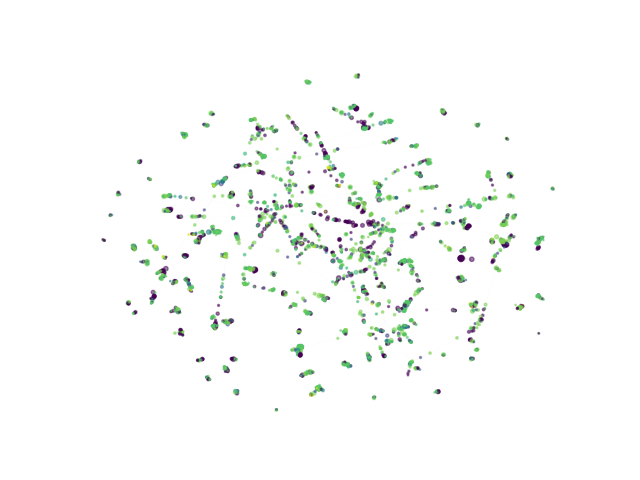
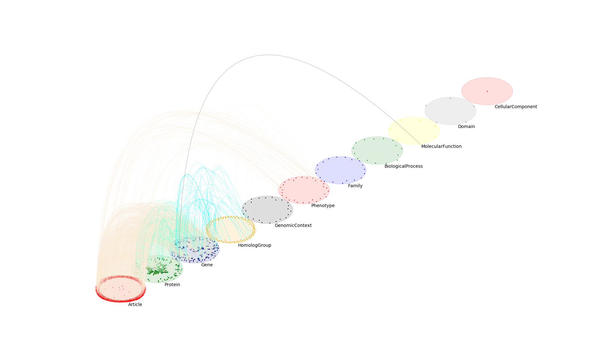

Network visualization
This section includes basic examples on network visualization. (datasets are available in the ./datasets folder on the repo home page!)
From hairball to multilayer plots
The following example shows minimal usecase for obtaining both types of visualization. For more detailed examples, visit the ./examples folder in the main repo.
1 ## visualization of a simple heterogeneous network
2 from py3plex.visualization.multilayer import *
3 from py3plex.visualization.colors import all_color_names,colors_default
4 from py3plex.core import multinet
5
6 ## you can try the default visualization options --- this is the simplest option/
7
8 ## multilayer
9 multilayer_network = multinet.multi_layer_network().load_network("../datasets/goslim_mirna.gpickle",directed=False, input_type="gpickle_biomine")
10 multilayer_network.basic_stats() ## check core imports
11
12 ## a simple hairball plot
13 multilayer_network.visualize_network(style="hairball")
14 plt.show()
Yields the harball plot:
{kind=link}

1 ## going full py3plex (default 100 iterations, layout_parameters can carry additional parameters)
2 multilayer_network.visualize_network(style="diagonal")
3 plt.show()
And the diagonal multilayer layout:
{kind=link}

For more custom visualizations, please consider ./examples/example_multilayer_visualization.py!